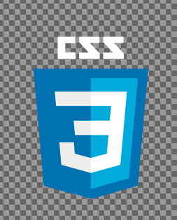
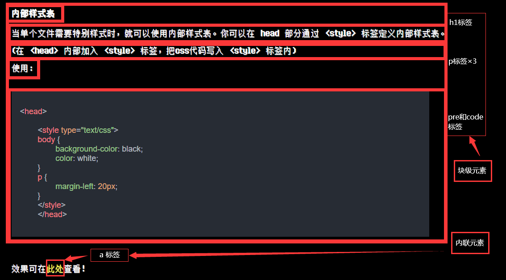

你认为的css:
我认为的css:
[doge]
css，中文名为 层叠样式表(英文全称：Cascading Style Sheets)是一种用来表现HTML（标准通用标记语言的一个应用）或XML（标准通用标记语言的一个子集）等文件样式的计算机语言。CSS不仅可以静态地修饰网页，还可以配合各种脚本语言动态地对网页各元素进行格式化。
CSS 能够对网页中元素位置的排版进行像素级精确控制，支持几乎所有的字体字号样式，拥有对网页对象和模型样式编辑的能力。
-取自百度百科-
当浏览器读到一个样式表，它就会按照这个样式表来对文档进行格式化。有以下三种方式来插入样式表：
当样式需要被应用到很多页面的时候，外部样式表将是理想的选择。使用外部样式表，你就可以通过更改一个文件来改变整个站点的外观。
(把css文件外挂在网页外部方便修改，要使用时只需链接过来即可)
使用 <link> 标签可以链接网页外部的文件(要在 <head> 标签里写)
使用：
<head>
<link rel="stylesheet" type="text/css" href="CssPath">
<\head>
PS:其中的“CssPath”是指css文件的位置(文件扩展名是“.css”)。
当单个文件需要特别样式时，就可以使用内部样式表。你可以在 head 部分通过 <style> 标签定义内部样式表。
(在 <head> 内部加入 <style> 标签，把css代码写入 <style> 标签内)
使用：
<head>
<style type="text/css">
body {
background-color: black;
color: white;
}
p {
margin-left: 20px;
}
</style>
</head>
效果可在此处查看！
说明：
当特殊的样式需要应用到个别元素时，就可以使用内联样式。使用内联样式的方法是在相关的标签中使用样式属性。样式属性可以包含任何 CSS 属性。以下实例显示出如何改变段落的颜色和左外边距。
<p style="color: red; margin-left: 20px">
你是一个一个一个段落啊啊啊啊啊啊啊啊啊
</p>
总之：
大多数 HTML 元素被定义为块级元素或内联元素。
编者注：“块级元素”译为 block level element，“内联元素”译为 inline element。
块级元素在浏览器显示时，通常会以新行来开始（和结束）。
例子：<h1>, <p>, <ul>, <table>
内联元素在显示时通常不会以新行开始。
例子：<b>, <td>, <a>, <img>
PS: <ul> 标签定义无序列表， <table> 定义表格，<b> 标签定义粗体，<td> 定义表格里的一个格子(之后会学到)
关于块级元素和内联元素的理解：
HTML <div> 元素是块级元素，它是可用于组合其他 HTML 元素的容器。
<div> 元素没有特定的含义。除此之外，由于它属于块级元素，浏览器会在其前后显示折行。
如果与 CSS 一同使用，<div> 元素可用于对大的内容块设置样式属性。
<div> 元素的另一个常见的用途是文档布局。它取代了使用表格定义布局的老式方法。使用 <table> 元素进行文档布局不是表格的正确用法。<table> 元素的作用是显示表格化的数据。
(说白了就是个大容器，可以在里面的所有东西作为一个整体)
实例：
<div style="float:left;">
<h1>标题</h1>
<p>段落段落段落段落段落段落段落段落段落段落段落段落段落段落段落段落<br />
段落段落段落段落段落段落段落段落段落段落段落段落段落段落段落段落段落段落段<br />
落段落段落段落段落段落段落段落段落段落段落段落段落段落段落段落段落段落段落<br />
段落段落段落段落段落段落段落段落段落段落段落段落段落段落段落段落段落段落段<br />
落段落段落段落段落段落段落段落段落段落段落段落段落段落段落段落段落段落段落<br />
段落段落段落段落段落段落段落段落段落段落段落段落段落段落段落段落段落段落段落</p>
</div>
<div style="float:left;">
<h1>标题</h1>
<p>段落段落段落段落段落段落段落段落段落段落段落段落段落段落段落段落<br />
段落段落段落段落段落段落段落段落段落段落段落段落段落段落段落段落段落段落段<br />
落段落段落段落段落段落段落段落段落段落段落段落段落段落段落段落段落段落段落<br />
段落段落段落段落段落段落段落段落段落段落段落段落段落段落段落段落段落段落段<br />
落段落段落段落段落段落段落段落段落段落段落段落段落段落段落段落段落段落段落<br />
段落段落段落段落段落段落段落段落段落段落段落段落段落段落段落段落段落段落段落</p>
</div>
点击此处查看效果(放大网页会发现用div套住的元素会跟着一起往下)
HTML <span> 元素是内联元素，可用作文本的容器。
<span> 元素也没有特定的含义。
当与 CSS 一同使用时，<span> 元素可用于为部分文本设置样式属性。
比如：
<p>今天是多美好的一天啊。<br />
小鸟在歌唱，鲜花在绽放。<br />
在这样的一天里，像你这样的孩子...<br />
<span style="color: red;">应 当 在 地 狱 里 焚 烧 。</span>
</p>
效果如下：
今天是多美好的一天啊。
小鸟在歌唱，鲜花在绽放。
在这样的一天里，像你这样的孩子...
应 当 在 地 狱 里 焚 烧 。